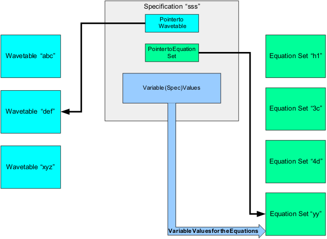

Review of the equation based timing architecture
The architecture of the equation based timing (EBT) definition is composed of three modules; the wavetable, equation set and specification. To complete the timing setup for a test, one of each of the modules is defined. In a test flow the same timing setup may be used by more than one of the tests. A test flow will also generally contain tests that require a variety of test setups. To support this requirement multiple wavetable, equation st and specification modules can be defined and linked in a variety of ways to generate different timing setups. The modules and their relationships are shown in the figure below.

The functions for each of the modules follow:
- Wavetable: The wavetable module contains the definitions that set up the physical waveform table (physical waveforms). Each wavetable must contain definitions for every pin in the pin configuration setup. In the next section we will review the syntax of the wavetable module.
- Equation set: This module is used to define the timing setups for the edge generators. The time in which each edge generator occurs can be defined with fixed numeric values, or the time may be defined in terms of equations and variables.
- Specification set: This module binds the wavetable module and the equation set module together by pointing to and selecting one of each respective module. The specification set also provides values to the variables of the selected equation set.